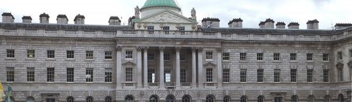

The Alumni Association for King's Engineers —
past & present.

KCLEA is the Alumni Association for those who have studied Engineering or work at King's in the Faculty or Division of Engineering — or more recently in the School of Biomedical Engineering and Imaging Science, or the Department of Engineering.
KCLEA is seeking members to help with Hardware Hack 26
Volunteer to mentor students at the next King's engineering challenge.
What the Association does.
Six things KCLEA does for King's engineering alumni — events, fellowship, the Bulletin, and student support.
Membership
Membership of KCLEA is free to KCL Engineering Alumni and Staff. If you would like to join, contact the Membership Secretary.
Annual Lunch
KCLEA holds an Annual Lunch in June and welcomes all past King's Engineers and their guests to attend. 13th June 2026.
Newsletters & Bulletin
KCLEA publishes email newsletters 5 times a year, and the King's Engineer Bulletin every six months — available online.
Find out about King's Events
KCLEA holds an annual "Find out about King's & Networking Event" in the autumn — hear what King's Engineering is doing and meet to network with other KCLEA members.
Annual Lecture
KCLEA inaugurated in 2013 the Annual Lecture on Engineering topics — open to all, to show the work of KCL or KCLEA members. Held in the spring (in 2025 at LIHE).
Activities with Students
KCLEA works closely with the students who run KCLES and KCL WiSTEM, and the staff of BMEIS and the Dept. of Engineering — providing KCLEA members for student activities and support by bursaries & medal prizes.
Follow KCLEA
and the King's network.
Members, students, and other engineers can follow KCLEA on LinkedIn — both the alumni group and the KCLEA company page. King's Connect is open to all alumni.
It helps if you have your subject and graduation date in your profile.
KCLEA Group on LinkedIn
Join the discussion with King's engineering alumni.
Join the group → LinkedIn pageFollow KCLEA on LinkedIn
For members, students & other engineers.
Follow → King's ConnectKing's Connect
The King's College London alumni community platform.
Open Connect → ContactGet in touch
Contact the Membership Secretary or use our contact form.
Contact us →Upcoming
events.
Forthcoming KCLEA events for King's engineering alumni and staff. Free to attend; all welcome unless otherwise noted. Scroll the calendar below — and check back regularly as new dates are added throughout the year.
June 2026
Members needed for Hardware Hacks 26
Members & judges needed for Hardware Hacks 26
The Annual Lunch 2026
Archives & news.
Looking for past Annual Lectures, news items, or coverage of previous Annual Lunches? Browse the archives below — or subscribe to the email newsletter to hear about new events as they're announced.
Past Annual Lectures
Speakers, abstracts, and recordings from every KCLEA lecture since 2015.
Browse archive → NewsNews Items
Recent KCLEA news and member updates.
Read news → NewsletterThe Bulletin
Five issues a year + the King's Engineer Bulletin.
Read latest → Stay updatedFollow on LinkedIn
Real-time updates on events as they're confirmed.
Follow KCLEA →Hardware Hackathon 26.
A first-of-its-kind, pure hardware hackathon at King's. Teams of four design, prototype, and demo real, physical systems — in just over 24 hours.
At a glance
Multiple sessions, daytime
Guy's Campus, SE1 1UL
Sponsored by a KCLEA member
Open to all KCLEA members
About the event.
Following the success of the speed-networking event, a KCLEA member is sponsoring Hardware Hacks 26 — a first-of-its-kind, pure hardware hackathon hosted on the Guy's Campus, organised by KCL Robotics and KCL Electronics.
Software hacks are frequent — but hardware is a different world. Hardware Hacks 26 challenges teams of up to four to design, prototype, and demo real, physical systems within strict time limits. Read what one KCL student writes about the value of hackathons.
How the hackathon works.
Scavenge to build.
Teams will be given a household appliance, plus access to a heap of miscellaneous e-waste.
Reverse-engineer.
You must strip and scavenge its components to build an interesting invention within a time limit.
Solve the problem.
Your hacked creations are designed around specific problem statements — revealed on the day.
Be resourceful.
Brand-new kits are at your disposal — but true glory (and points) come from maximising salvaged e-waste.
"All in just over 24 hours, each team will design, prototype, and demo real, physical systems."
If it doesn't plug in, move, sense, or interact with the physical world — it doesn't qualify.
Roles we're looking for.
KCLEA has been approached to find members to fulfil two roles. Whatever you studied at King's, your engineering experience will be very well received by the students.
Supporters
Mentor, answer questions, act as a sounding board, and generally share your experience. We aim for around 5 KCLEA members at each session — and if you can do multiple, even better. You'll meet more King's engineers, and watch the hacks evolve in real time.
- Sat morningTo help define what needs to be done.
- Sat afternoonTo start the build.
- Sat eveningTo keep spirits up.
- Sun morningTo give that final push.
Judges
Sunday afternoon. See the hacks in use, hear an elevator pitch from each team, and question them on how they made a successful hack.
- Sun afternoonDemo viewing, pitches, and Q&A with the teams.
Help today's students
in a practical demonstration
of engineering skill.
KCLEA is approaching members whose skills can help the students in this novel activity — but is also looking to its wider membership to take the opportunity to meet other King's engineers. KCLEA is always seeking volunteers, whether as committee members or event helpers.
Location & travel.
The General Class Room (GCR) in the Hodgkin Building — familiar to students of Biomedical Engineering. Five minutes' walk from London Bridge station.
Hodgkin Building
Guy's Campus, King's College London
SE1 1UL
Borough Market exit
Take the escalators to Borough High St. First left into King's Head Yard. At the end, go under the building and turn right into Beak Alley, then left and right into Memorial Gardens. Walk to the end of the buildings on your right and take the furthest set of steps up to the Hodgkin Building.
Joiner Street / London Bridge
Follow signs to Guy's Hospital / the Shard. Cross St Thomas Street into Great Maze Pond, turn left then right into Memorial Gardens. The Hodgkin Building is at the far end — with the modern New Hunt's House on the left.
Stay updated.
KCLEA members should join the KCLEA group on LinkedIn — the place to find the latest KCLEA news and post your achievements. Members, students, and other engineers can also follow KCLEA on LinkedIn or King's Connect.
The King's
Engineer Bulletin.
Published twice a year, in spring and autumn — a light-hearted look at past, present, and future issues concerning Engineering at King's College London. Contributions from alumni, students, and staff are always welcome.
Cover
image
placeholder
Spring 2026
The latest issue of the King's Engineer Bulletin will be available here as soon as it's published. Click the cover image (left) or the download button below to grab the PDF — once the issue is uploaded, the placeholder swaps for the real cover with no other changes to this page.
From the editor.
The Bulletin's editor sets the tone for each issue and lightly shepherds contributions. Reach out any time.
The aim of the Bulletin is to give a light-hearted look at past, present, and future issues concerning Engineering at King's College London.
Contributions for the Bulletin are always welcome from alumni, students, and staff. Articles receive minimal editorial interference from me — which I believe adds to the Bulletin's charm. Please send your offering(s) to me at bulletin@kclea.org.uk.
Have an article in mind?
Articles, news items, photos, anniversaries, project write-ups — anything that would interest a King's engineer is welcome. Articles receive minimal editorial interference; we believe it adds to the Bulletin's charm.
The archive.
Past issues will appear here as the archive is migrated. Each thumbnail will link to its PDF. Placeholders below.
2025
Issue —
↓ PDF · placeholder2025
Issue —
↓ PDF · placeholder2024
Issue —
↓ PDF · placeholder2024
Issue —
↓ PDF · placeholderGet it in your inbox.
KCLEA also publishes email newsletters five times a year. They include news items, member updates, and reminders of upcoming events. Members will be added automatically; non-members can contact us to subscribe.
The Annual
Lunch.
A summer gathering on the Monarch's Birthday — drinks, the RAF fly-past, and a two-course lunch on the 8th floor of Bush House. Members, partners, and guests welcome.
At a glance
Doors open at noon
Centre Block Door, Aldwych
opposite Kingsway · WC2B 4BG
About the lunch.
It is always an event where members, partners, and their guests remake friendships, share stories, and find out more about the role King's engineers and King's engineering played in yesterday's world — and how today's are making tomorrow's a better place.
We are also pleased to congratulate the Bursary and Award Winners and to meet the leaders of the student societies. By custom, the KCLEA Summer Lunch is held on the Monarch's Birthday: a chance to network with other KCLEA members, their partners and guests over drinks, followed by a two-course lunch.
It would be good to meet King's engineers of all ages, careers, and experiences — whether you studied in the Faculty* or Division of Engineering, or more recently in the School of Biomedical Engineering and Imaging Science, or the Department of Engineering.
The day's flow.
A relaxed afternoon. Minimal speeches — the purpose is for those there to remember their time at King's, and to share the achievements of their varied careers.
- 12:00 Doors open · drinks & networking Enter via the Centre Block Door at the Aldwych, opposite Kingsway (w3w.co/zeal.foods.mini). Catch up over drinks on what has happened over the past year.
- ~12:55 RAF fly-past We move to the open areas to see the fly-past — Bush House sits directly under the route. A particular treat for the engineers in the room.
- 13:00 Two-course lunch Back inside for lunch and conversation with KCLEA members, their guests, recent graduates, and selected students.
- 14:30 Drift away Guests begin to leave; rooms are vacated by 15:00–15:30 via the Centre Block Door.
Tickets & pricing.
Two subsidised price tiers. Book promptly — places are limited.
Alumni 10+ years & guests
£32per headFor those who graduated more than 10 years ago, and their guests.
Recent graduates (since 2016)
£25per headA reduced rate for alumni who have graduated from 2016 onwards.
Please register
promptly.
You'll need your alumni number — find it in emails from the alumni office or in King's Connect. Members' partners and recent graduates are warmly encouraged.
Bring your cohort.
If you'd like to get in touch with those you graduated with, the King's Alumni Office can help you find and invite your contemporaries.
Email forever@kcl.ac.uk with the subject "KCLEA lunch group". We are keen that members' partners — and those who graduated more recently — are included in the gathering.
Getting there.
Bush House sits at the curve of the Aldwych — five steps from the new pedestrianised Strand, and a short walk from many of London's transport hubs.
By tube & rail
- TempleDistrict & Circle 7 min
- HolbornCentral & Piccadilly 7 min
- Covent GardenPiccadilly 8 min
- Charing CrossBakerloo, Northern & National Rail 12 min
- Tottenham Court RoadElizabeth, Central & Northern 14 min
- WaterlooJubilee, Northern, Bakerloo & National Rail 18 min
- FarringdonThameslink & Elizabeth 20 min
By bus
The Aldwych is served by a vast number of buses from north, south, east, and west.
See the TfL Aldwych route map (PDF) ↗
Door
Enter via the Centre Block Door at the Aldwych, opposite Kingsway. Exit by the same door.
w3w.co/zeal.foods.mini — what3words pin for the door.
Stay updated.
KCLEA members should join the KCLEA group on LinkedIn for the latest news. Members, students and other engineers can also follow KCLEA on LinkedIn or King's Connect.
The Annual
Lecture.
A spring prestige lecture for KCLEA members and a wider community — showing the role of King's engineering and its alumni in making a better world.
At a glance
Doors 17:45 · ends 21:00
King's Building, Strand Campus
South side of the pedestrianised Strand
Lecture
Almost a Lifetime Leading Changes
across Engineering.
About the lecture.
Jo Streeten will reflect on how studying engineering at King's College London provided the foundation for a 40-year career shaped by continuous change and opportunity.
She started her career as a project engineer at the BBC, where she witnessed — and helped deliver — major transformations in broadcasting, including the launch of new channels and the transition to widescreen and digital technologies.
Recognising that change creates opportunity, she moved into the management of complex property and construction programmes, including the BBC's headquarters and the disposal of Bush House, broadening her impact beyond traditional engineering roles.
In the second half of her career, after joining the global infrastructure consultancy AECOM, she grew its built environment business — of which she is now the Europe and India managing director. AECOM has delivered notable projects such as the London 2012 Olympic Park, and has been keenly focussed on introducing the changes needed to create a more sustainable built environment.
During this period, she has also seen the engineering profession itself evolve, with women gaining a stronger voice in shaping the places and systems we all use.
Looking ahead, she will consider the next major wave of transformation already underway: Artificial Intelligence. AI presents both significant challenges and extraordinary opportunities for future engineers. It will fundamentally change how we design, build, and operate infrastructure — requiring new skills, ethical frameworks, and ways of thinking. Just as digital transformation reshaped broadcasting and sustainability reshaped construction, AI will reshape engineering itself — and those who engage with it early will help define the next era of progress.
The speaker.
2026 Jo Streeten Managing Director · AECOM Buildings & Places
Joanna Streeten
Joanna Streeten is the Managing Director of the global infrastructure company AECOM Buildings and Places business for UK, Europe, and India — comprising AECOM's design, project, and cost management capabilities. She has responsibility for the delivery of the major portfolio of buildings and masterplans the firm delivers across the region.
Jo graduated in Electrical and Electronic Engineering from King's College London. She is a chartered engineer and qualified project manager, with over 35 years of project delivery experience in engineering and construction. She has held senior positions in both client companies and professional consultancy firms.
Jo is a former board member of the Association for Consultancy in Engineering, and is currently a Trustee of the Royal Ballet and Opera.
The evening.
A relaxed evening — drinks before, lecture in the middle, networking and refreshments after.
- 17:45 — 18:20 Arrive · drinks in the Council Room Start meeting others over a drink. Register at the desk under the TV screen on arrival; you'll then be directed to the Council Room.
- 18:25 Move to the Nash Lecture Theatre A short walk to the lecture theatre.
- 18:30 Welcome by Peter Weitzel President of KCLEA opens the evening.
- 18:35 Lecture by Jo Streeten "Almost a Lifetime Leading Changes across Engineering" — approximately 55 minutes.
- 19:30 Networking & refreshments Continue the conversation with the speaker over drinks and ample refreshments.
- 21:00 Event end Doors close.
Free to attend —
please register.
The lecture and reception are free, but to help us with numbers please register in good time. Before and after the lecture there's an opportunity to network and engage with the speaker over drinks and ample refreshments. We look forward to an audience from all areas of the engineering industries — and from anyone with an interest in the excellence of King's College London.
The Nash
Theatre.
The lecture is held in the Nash Theatre, named after Professor Kevin Nash — Professor of Civil Engineering from 1961 and Head of Department from 1971, until his sudden death at home on 24 April 1981, at the age of 59.
He was a distinguished international expert in soil mechanics — and a brilliant, student-focussed teacher and tutor.
Getting there.
King's College Strand Campus is in the heart of central London — well served by tube, rail, and bus.
By tube & rail
- TempleDistrict & Circle 7 min
- HolbornCentral & Piccadilly 7 min
- Covent GardenPiccadilly 8 min
- Charing CrossBakerloo, Northern & National Rail 12 min
- Tottenham Court RoadElizabeth, Central & Northern 14 min
- WaterlooJubilee, Northern, Bakerloo & National Rail 18 min
- FarringdonThameslink & Elizabeth 20 min
By bus
King's College Strand Campus is served by a vast number of buses from north, south, east, and west.
See the TfL Aldwych route map (PDF) ↗
Door
Enter via the Strand building on the south side of the pedestrianised Strand. Register at the desk under the TV screen.
About the Annual Lecture.
KCLEA inaugurated the concept of an Annual Lecture on engineering topics after the Faculty of Engineering was closed in 2013. Each spring, a distinguished speaker reflects on a theme of engineering practice, leadership, or progress — followed by drinks and networking.
Details of previous KCLEA Annual Lectures can be found in the archive.
We hope to record this year's lecture — but we are short of committee members to organise it. If you'd like to help KCLEA, get in touch.
Stay updated.
KCLEA members should join the KCLEA group on LinkedIn for the latest news. Members, students and other engineers can also follow KCLEA on LinkedIn or King's Connect.
Past Annual
Lectures.
Since the inaugural lecture in 2015 — when KCLEA inaugurated the concept of an Annual Lecture on engineering topics — distinguished King's engineers and academics have spoken every spring on subjects from Titanic to AI to nuclear safety.
About the archive
Discovery and scale-up of vaccines and novel therapeutics in the age of AI and robotic automation.
The global pandemic shook the western world to its core, making clear that the recovery strategy depended totally on rapid deployment of novel anti-viral vaccination campaigns to permit living with on-going mutant virus strains. Technology promises a new era for the rapid response against new and emerging threats and diseases.
Automation in science is increasingly extending the scope of investigation and exploration of ever richer parameter spaces. Robot chemists controlled by model-based methodologies — or evolutionary and AI computing — increasingly become part of the toolkit in scientific discovery.
Professor Makatsoris explored a cross-section of research with examples ranging from small-organic-molecule discovery through to the rapid development and scale-up manufacture of vaccines.
Watch on the King's Alumni YouTube channel ↗"We start... but why don't we finish?"
As the nation started a new decade, facing new horizons with a new administration, KCLEA was able to offer this provocative topic to complement the re-introduction of the new Engineering degree at King's.
The lecture raised a number of issues for discussion, focussing on why UK plc has been disproportionately good at innovation and idea creation in science and engineering — but not so successful at capitalising upon these ideas. Discussion topics included:
• the need for engineers to become more commercially minded to see ideas through to fruition
• what can we do to encourage the role of women in engineering and science?
• the finance structure and how capital expenditure is viewed in the UK compared to other countries
• how the graduates of the future can make a difference and spearhead commercial change
• the importance of the 36,000 scale-up companies in propelling UK growth
Cyber Security — and the case for "Explainable Security".
Based on the six W's — Who? What? Where? When? Why? How? — Professor Viganò discussed and argued the concept of "Explainable Security" (XSec) as it relates to its stakeholders, and the many facets of modelling, privacy, trust, vulnerabilities, and counter-measures.
He set out a roadmap identifying several possible research directions for XSec. As concrete examples he discussed a new declarative way to define and reason about privacy, and showed how basic cybersecurity notions — and even some advanced ones — can be explained with the help of famous (and some perhaps less obvious) movies and other artworks.
Tunnels and Tunnelling.
Bill's talk discussed tunnelling from the early days of the industrial revolution to the intricacies of modern tunnel boring machines and techniques. He looked at what the future might hold — exploring how tunnellers' know-how developed from early empirical methods to the appliance of science, and now information technology and data management.
There are many uncertainties and dangers lurking underground, and learning from past failures is a significant part of a tunneller's education. Bill described the forensic investigation of recent collapses across the world and the key lessons the industry has learned from them.
Bill was a director of Arup for 20 years; he started and led Arup's global tunnelling business and spent five years leading Arup's design of London's Olympic Park, followed by two years as part of a strategic research team in HM Treasury. Since 2004 he has run his own consultancy, providing advice to the tunnelling and infrastructure industry — clients have included High Speed 2, Transport for London, Thames Tideway, Swiss Re, Munich Re, and Deloitte. Bill has an international reputation for forensic investigation of tunnel failures and was Chairman of the British Tunnelling Society from 2006 to 2008.
Titanic, from engineering triumph to human tragedy.
"How a splendid ship was sunk by the obstinacy and perversity of man."
Graham's talk discussed how the Titanic was a triumph of American finance and British engineering. He explained the background to many of her technical issues, and showed how the design features of the Titanic and her two sister ships prove what splendid technical triumphs they were.
He reasoned that the Titanic did not hit the iceberg by her own accord, but because of the failings of her captain and officers — and that the tragic loss of life was because regulations permitted 16 lifeboats to be taken off the Titanic the day before she left Southampton. These human failings, he argued, are the reasons why the Titanic has become the world's most famous maritime tragedy.
Fukushima, the story of a nuclear disaster.
This talk set out the timeline of the meltdown of the Fukushima nuclear reactors following the Tōhoku earthquake and tsunami, revealing how close the accident came to becoming a disaster on an unprecedented scale.
Drawing on a number of the many publicly-available reports into the disaster, the talk also focused on the fallout from it — in terms of the success in limiting atmospheric radiation, the potentially more worrying concerns for the release of radioactive material into the Pacific Ocean, and the recent Lancet report into longer-term effects on the region's population.
Impact of Engineering on Medicine — from imaging to surgery and beyond.
The inaugural KCLEA Annual Lecture, marking the start of an annual spring tradition. Liz traced the impact of engineering on medicine — from the early days of computerised tomography (CT), through the imaging revolution, to surgery and what comes next.
The Committee.
The day-to-day business of the Association is run by an elected committee, supported by sub-committees, co-opted members, and the trustees of the Investment Fund.
At a glance
Revised December 2025
Could one be yours?
KCLEA needs
younger blood.
The Committee is constantly on the lookout for new members to run our communications, produce our events, coordinate activities with students, sustain membership, and link with the staff of KCL and the Alumni Office.
As KCLEA looks to the second half of the 21st century, we need fresh executives and leaders to ensure a successful future for the Association. If you feel you can help — or just want a chat — get in touch.
Executive committee.
The principal officers of the Association — elected at the AGM on 2 December 2025.
Peter Weitzel
Chris Bowden
David Blacoe
Liz Beckmann
John Thomson
Vacancy
Executive officers.
Area heads — running the Association's working groups and member-facing programmes.
Georgina Lupa Florian
George Obada
Vacancy
Dr Ernest Okon
Vacancy
Committee members.
Members of the broader committee — supporting the executive across all working areas.
Dr John Zubrzycki
Afrin Basit
Vacancy
Vacancy
Vacancy
Vacancy
Trustees & oversight.
Confirmed at the 2025 AGM — independent stewardship of the Investment Fund (formerly the Life Subscription Fund) and the year's accounts.
Mike Clode
Chris Bowden
John Thomson
Graham Raven
David Sheridan
Constitution & records.
The Committee Meeting Minutes are posted here once approved by the Committee.
The Constitution
Revised December 2025. The governing document of the Association.
Read the Constitution → RecordsCommittee Meeting Minutes
Approved minutes from past committee meetings.
Browse minutes → Records · AGMAGM Agenda
Agenda and motion papers from the Association's AGMs.
View agenda → Records · FinanceAnnual Accounts
The annual accounts of the Association as examined.
View accounts →Stay updated.
KCLEA members should join the KCLEA group on LinkedIn for the latest news. Members, students and other engineers can also follow KCLEA on LinkedIn or King's Connect.
About
KCLEA.
A community of King's engineering alumni and staff — drawn from generations of the Faculty of Engineering, KCLES, the School of Biomedical Engineering and Imaging Science, and the Department of Engineering.
At a glance
A heritage, in dates.
A continuous lineage from the establishment of engineering at King's in 1838 — older than every UK engineering institution but the Civils.
Engineering at King's. The discipline established at King's College London.
KCLES founded. The student society from which KCLEA grew — older than every UK engineering institution but the Civils.
Biomedical Engineering. Begins at King's — the long lineage of medical engineering.
School of BMEIS. School of Biomedical Engineering and Imaging Science founded.
Department reopens. Department of Engineering re-established in the new Quad labs at the Strand.
KCLEA continues. Connecting King's engineers across decades — and looking for the next generation of leaders.
Our heritage.
KCLEA members are drawn from the Faculty of Engineering — with its departments of Civil, Mechanical, and Electrical / Electronic Engineering — through to today's recent graduates of the School of Biomedical Engineering and Imaging Science, and the Department of Engineering.
It is a rich heritage based on the establishment of Engineering at King's in 1838, and KCLES — the student society formed in 1847 — from which KCLEA grew. KCLES is older than every UK engineering institution but the "Civils."
The three pillars.
What KCLEA does for King's engineers — past and present.
Networking
KCLEA encourages its members to network — in person at events and through student activities, and remotely through our developing group on LinkedIn.
Communication
Members are kept abreast of news and the work of King's engineering by a 5-times-a-year email newsletter, the Bulletin, our developing social media presence, and the chance to be heard at the virtual AGM.
Events
Three anchor events a year — one each term — give ample opportunity to network and build relationships through King's. From research showcases to the summer lunch under the RAF fly-past.
One anchor event per term.
Members of all ages, disciplines, and careers come together at three set-piece events through the year.
Find out about King's
Hear about the current research and courses at King's — and meet members at our autumn networking event.
The Annual Lecture
A major public lecture, open to all, showing the achievements of King's engineers — followed by drinks and networking.
The Annual Lunch
On the King's Official Birthday — drinks, the RAF fly-past, and a two-course lunch with members of every era.
Supporting students.
KCLEA members support students and the courses through activities such as fireside chats, guest lectures, and working on or judging project work — most recently as supporters of Hardware Hacks 26.
Beyond direct activities, KCLEA awards bursaries and medals to recognise outstanding student work and to support those who would benefit most from a King's education. Find out more about our work →
King's Engineering, today.
King's Engineering is as strong as ever — with two distinct centres of teaching, research, and practice.
Department of Engineering
Reopened in 2019 and now well re-established in the new Quad labs at the Strand — the modern continuation of the engineering tradition founded at King's in 1838.
Reopened · 2019 · Strand CampusSchool of BMEIS
The School of Biomedical Engineering and Imaging Science — founded in 2011, growing from biomedical engineering at King's since 1954 — goes from strength to strength with the opening of LIFE, the London Institute for Health Engineering at St Thomas' Campus.
Founded · 2011 · home to LIFELooking ahead to the
second quarter of the 21st century.
In 2025 KCLEA is looking for a stronger team to take its networking, communications, events, and student activities forward. We are looking for keen groups of King's engineers driving today's industries forward — to continue the work and tradition of KCLEA, and ensure it serves its members, the King's engineering community, and the world at large.
If you feel you can help — or just want a chat — get in touch.
Members & governance.
Find detailed information on membership, awards, traditions, and useful links — straight from KCLEA's section pages.
Membership
Free for KCL engineering alumni and staff. Find out how to join.
Read more → Section · BursariesBursaries
£1,000 awards supporting King's engineering students.
Read more → Section · ConstitutionThe Constitution
The governing document of the Association — adopted December 2025.
Read the document → Section · 13 Club TrophyThe 13 Club Trophy
The history of the trophy — and the winners since 2009.
Read more → Section · DirectoryDirectory of members
Privacy notice and stories from KCLEA alumni.
Open directory → External · KCLUseful links to KCL
Alumni Office, Mentoring (King's Connect), and Entrepreneurship.
View links →Stay updated.
KCLEA members should join the KCLEA group on LinkedIn for the latest news. Members, students and other engineers can also follow KCLEA on LinkedIn or King's Connect — and members are kept abreast through 5 email newsletters a year and the King's Engineer Bulletin.
Membership of KCLEA.
Free for King's engineering alumni and staff. No formal subscription — voluntary donations earnestly requested.
At a glance
All former students of the Department of Engineering, the School of Biomedical Engineering and Imaging Science, the Division of Engineering or its predecessors — of King's College London and the other institutions which have merged with it — who were registered for at least three terms or two semesters, and past and present members of the teaching staff, are eligible.
Following a decision at the 2008 AGM, all engineering graduates and staff are eligible to become members of KCLEA. There will be no formal subscription, but voluntary donations are earnestly requested so that the Association may continue to give full support to current engineering students.
Additionally, the Committee may recommend to a General Meeting the election of such persons as it thinks fit for honorary membership.
Not sure?
If you think you may already be a member but aren't sure, contact the Membership Secretary for any membership enquiries — we'll check the directory and confirm.
Undergraduate Engineering
Student Bursaries.
KCLEA invites applications for its undergraduate engineering student bursaries — two awards each of £1,000, normally given each year.
2025 in numbers
Two KCLEA bursaries — each to the value of £1,000 — are normally awarded each year to students studying for an Engineering degree (BEng or MEng) at KCL in the 2nd year of a three-year degree, or the 3rd year of a four-year degree. A student cannot receive the bursary more than once during their time at KCL.
Students must formally apply to be considered for a bursary using no more than 500 words. The award is decided by a panel of KCLEA committee members and academic staff, based on the following criteria, with the weighting for each shown alongside.
Award criteria.
- Presentation and clarity of the application. 10%
- Academic progress, in a measure that can be validated with staff. 25%
- Contribution to college life, society, engineering, and/or the advancement of STEM in society. 25%
- How do you believe engineers can make a difference to society? 25%
- How would the bursary help your studies? 15%
Awarded at the KCL Prizegiving event
- Jun ZhangDepartment of Engineering award
- Jack PritchardBiomedical Engineering award
Three £1,000 bursaries awarded
- Elyab Berhanu2nd year Biomedical Engineering
- Hei (Harriet) Chung2nd year Biomedical Engineering
- Alexis Kusikwenyu2nd year Biomedical Engineering
All winners have been invited to the Annual Lunch so we can congratulate them personally.
These bursaries are funded by donation from KCLEA and a fundraising exercise among KCLEA members and other KCL Engineering graduates.
KCLEA reserves the right either to share bursaries if there is a tie, or not to award any bursary in the unlikely event of none being of a sufficient standard. The bursaries are announced by the President of KCLEA by email to the awardees in late November and confirmed at the AGM, with payment to be made by year end.
Apply for a 2026 bursary.
Eligible BEng or MEng students at KCL — submit a 500-word application this autumn. Contact the Activities Executive for guidance.
The Constitution
of KCLEA.
The Rules of KCLEA — adopted at the AGM on 2 December 2025. Twelve sections covering name, aims, membership, committee, officers, subscriptions, benefits, trustees, meetings, funds, dissolution, and rules.
What's changed
Twelve sections.
- Name
- Aims
- Membership
- Committee
- Officers and Executives
- Subscriptions
- Benefits
- Trustees
- Meetings
- Funds
- Dissolution
- Rules
01Name
The name of the body constituted by these Rules shall be "King's College London Engineers' Association" (hereinafter called "KCLEA").
02Aims
The Aims of KCLEA shall be:
03Membership
Ordinary members
Honorary members
04Committee
Governance
KCLEA shall be governed by a Committee. The Committee shall call an Annual General Meeting, other General Meetings and Committee Meetings as required under the Rules.
Constitution of the Committee
The Committee shall consist of:
Removal & co-option
05Officers and Executives
The Officers and Executives of KCLEA shall be elected from the ordinary membership.
Officers
Executives
Each Executive has full responsibility for their portfolio and must work collaboratively with other Executives, leaders, and others. Two-year term, with year-by-year reselection possible to a four-year maximum.
06Subscriptions
There is no subscription charge. KCLEA shall be required to seek approval of the AGM to charge any subscription to members.
07Benefits
Each member who is in communication with KCLEA shall be entitled to receive a copy of each of the publications of KCLEA and the Alumni Office.
08Trustees
Three Trustees shall be appointed by the Committee to manage the Investment Fund for the benefit of KCLEA. Trustees shall not hold office for longer than ten years, but may be removed by resignation, death, or resolution of a Special General Meeting called for the purpose.
One Trustee shall be appointed Senior Trustee by their fellow Trustees, responsible for receiving correspondence from outside bodies, co-ordinating Trustee actions, and providing the Honorary Treasurer and Auditors such information as they require.
09Meetings
10Funds
Investment Fund
Invested by the Trustees, in modes authorised either by law for Trust Fund investment, or by resolution of an Annual or Special General Meeting (with due notice). Cash interest forms part of the Fund's income and is re-invested.
General Fund
Donations and the like are paid to the Treasurer and held in the General Fund — the source of all KCLEA disbursements. Surplus revenue may, at Committee discretion, be invested under Rule 10.1 by the Trustees. Sums may be drawn from such investment for KCLEA use.
11Dissolution
If, in the opinion of the Committee, there is no longer adequate support or justification for KCLEA's continued existence, the Committee shall call a vote of those members who are in communication with the Alumni Office or KCLEA — overseen by an independent body (such as the Electoral Reform Society) — to propose dissolution. The consent of at least three quarters of those voting is required for KCLEA to be wound up. The Committee shall make detailed proposals on the voting paper for the disbursement of any outstanding monies, including the Investment Fund and the General Fund.
12Rules
The '13' Club
Trophy.
A statue of 'Reggie' on a pedestal — awarded annually to the King's engineering "group" whose record of reunions during the preceding year is judged most meritorious.
About the award
A trophy, named 'The 13 Club Trophy', is awarded to the 'finals' year — past or to come — whose record of reunions at KCLEA functions and at special gatherings of its members is judged to be the best during the preceding year. The trophy is a statue of Reggie suitably mounted on a pedestal.
The following is an extract from the conditions for the award:
"The '13' Club Trophy is awarded to the 'group' of old King's engineers whose record of reunions during the preceding year at KCLEA functions and special gatherings of its members is judged to be the most meritorious. A 'group' may consist of a number of engineers who were of the same year at King's, or a number of King's engineers residing in the same locality — e.g. a town, a county, or a foreign country. The award is made annually by the KCLEA Committee, whose judgement is final."
Over the years, the scope of the award has been broadened to allow the trophy to be presented to former engineering students who have made significant achievements in their professional or personal life, raised the profile of King's engineering, or given significant service to King's engineering or KCLEA.
Recent awardees.
Peter Weitzel
For his work in defining the future path of KCLEA after engineering's return to King's — both in Biomedical (FoLSM) and General & Electrical (NMES).
Liz Beckmann
For her service to KCLEA as twice President and Committee member, particularly with BMEIS — through her pioneering role in the development of CAT scanners.
Keith Newton
For his resolute and persistent search for KCLEA members on LinkedIn — providing brief biographies so that KCLEA knows its members better, and can keep in touch.
Winners since 2009.
- 2020 William Shepherd and the Civil Engineering Class of 1973(Comment from William Shepherd available)
- 2019John Thomson
- 2018Edwin Willis
- 2017David Blacoe
- 2016KCL CFG 1964
- 2015Michael G. Handcock
- 2014Graham Raven
- 2013Cecil French
- 2012Michael P. Clode
- 2011Peter Gould
- 2010Keith Newton
- 2009Stanley Earles
Directory of members.
For privacy reasons we don't publish member details on a public website. To check your membership or get in touch with old colleagues, the King's Alumni Office holds the central database — and is happy to help.
Where to look
If you have any stories and photographs, please send them using the Contact Us page — we will publish them here.
Due to the Data Protection Act, it is not possible to publish on a public website a list of all members with their addresses, telephone numbers, and other personal details. If you wish to check your membership of KCLEA or get in touch with colleagues from the past, you should go via the Alumni Office, who hold the central database of information about all past students.
The members area of this website is merely for maintenance of the website.
Stories from alumni.
Class of '61 get-together.
Three electrical engineers who graduated in 1961 held a get-together on Sunday 10 June 2007. Two of them had not met for over 44 years. We had a meal in a restaurant near Hatton Locks, Warwickshire, and then spent some hours enjoying each other's company and the sunshine. If you know any of these three King's engineers and would like to get back in touch, we'd be delighted to hear from you — please drop a line to the Membership Secretary.
We had a great time remembering life at King's between 1958 and 1961 — things like defending Reggie, parading him round the Strand, and snatching the University College mascot, Phineas. We remembered the surveying on Hampstead Heath which was part of our first-year civil engineering, designing a gear box as part of our mechanical engineering, and running up all the engines and electrical machinery for our practical work. We also recalled the time after taking our finals when we hired two sailing boats on the Norfolk Broads — three of us in one, and Peter Tamm, John Evans, and John Dymott in the other (who managed to snap their mast on the first day's sailing).
"Nostalgia isn't what it used to be."
Have a tale to tell?
Photographs, gatherings, anniversaries, your career arc since graduation — anything King's engineers would enjoy reading. Send it via the contact form and we'll consider it for this page and the Bulletin.
Useful links
to KCL.
A small, curated set of King's College London resources that members and prospective members may find useful.
KCL Alumni Office
The central King's alumni service — keep your details up to date, get in touch with old classmates, and find out about King's events.
alumni.kcl.ac.uk/alumni-community/contact-us Visit → MentoringKCL Mentoring
King's Connect — the alumni mentoring and community platform. A great way to share your career experience with current students.
kingsconnect.org.uk Visit → EnterpriseKCL Entrepreneurship
The King's College London entrepreneurship programmes — for student founders, alumni founders, and anyone curious about building something new.
kcl.ac.uk/entrepreneurship Visit →In Memoriam.
Remembering King's engineers — alumni, members, and members of staff — whose work, teaching, and friendship are kept in our memory by the Association.
- ProfessorIan Robertson 1963 — 2024
- ProfessorStanley Earles 1929 — 2024
- Ted Willis 1933 — 2023
- Michael Rush 1933 — 2023
- ProfessorErnest Michael Freeman in memoriam
- Ian Donald Williams 1942 — 2019
- John 'Peter' Simpson in memoriam
- ProfessorE.M.S. Deeley 1927 — 2018
Wish to honour an alumnus?
Send obituaries, tributes, or photographs to the editor of the King's Engineer Bulletin for inclusion. We will keep the memory of King's engineers — and their contribution — alive.
bulletin@kclea.org.ukGet in touch.
Use the form to send the Committee a message — questions, contributions, volunteering offers, or just to say hello. We read every submission.
Direct email
(Subject: "KCLEA lunch group")
Use the form.
Please use this form to send us a message. Required fields are marked with an asterisk.
Or email directly.
Skip the form when you know who to write to. We aim to respond within a few days.
Stay updated.
KCLEA members should join the KCLEA group on LinkedIn for the latest news. Members, students and other engineers can also follow KCLEA on LinkedIn or King's Connect — and members are kept abreast through 5 email newsletters a year and the King's Engineer Bulletin.